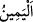

zikretmiştir.
İnsânü’l-uyûn’da der ki: “Ya’rub b. Kahtân’a “Eymen” denilmiştir. Çünkü Hud (a.s.)
ona, “Sen benim evlatlarımın en bereketlisisin (eymen).” demiştir. O, Yemen’e
yerleştiği için Yemen’e “Yemen” denilmiştir.
“Biri sağda,” bir grubu beldelerinin sağında “diğeri solda” diğer grubu beldelerinin
solunda “iki bahçeleri vardı.” Bu iki bahçeden murâd sâdece iki bahçe değil,
bostanlardan iki gruptur. Bu sağ ve sol cenahta olan bahçeler birbirlerine yakın ve iç içe
olduklarından dolayı sanki bir bahçe gibiydi.
“__WORD__ aslında sağ el demektir. Sağ el kuvvetli olduğu için organların en değerlisidir.
Sağ el sola göre kuvvetli olmasıyla bilinir ve ondan ayırt edilir. Ya da Sebelilerden
herkesin evinin sağında ve solunda iki bostanı vardı.
“(Onlara:) Rabbinizin rızkından” türlü meyve ve ürünlerden “yiyin ve” sizi
rızıklandırdığı için dil, kalb ve organlarla “O’na şükredin.” denildi.
Bu söz, nimeti tamamlamak ve nimetin haklarını hatırlatmak üzere Sebeliler’e
peygamberlerinin söylediklerini hikâye etmektedir. Ya da bu söz lisân-ı hâl ile
söylenmiştir. Yahut da onların bu sözün kendilerine söylenmesine lâyık olduklarının
beyânıdır.
“İşte güzel bir memleket ve çok bağışlayan bir Rab!” denildi.” Emredilen şükrü
gerektiren şeyin ne olduğunu beyan eden bir başlangıç cümlesidir. Yâni sizin beldeniz
hoş bir belde, size bu güzel ve temiz rızıkları veren, sizden şükür taleb eden Rabbiniz
kendisine şükredenin günah ve hatalarını bağışlayan bir Rab!
Memleketin Tayyibe/güzel olmasının mânâsı çorak değil güzel ve hoş meyveler
çıkaracak şekilde yumuşak ve bereketli olmasıdır. Ya da havası ve suyu temiz ve
güzeldir. Nitekim Kâşifî der ki: “Allah Teâlâ’nın rızık verdiği şehir, temiz bir şehirdir.
Sağlığa elverişli havası, tatlı suyu, temiz toprağı vardır.”
Güzellikte benzer cennete,
Tazelikte İrem bahçesine.
Fethu’r-Rahmân’da der ki: “Bu beldenin güzel oluşu, orada sivrisinek, karasinek, bit,
pire, akrep, yılan ve diğer zararlı haşerâtın olmaması sebebiyleydi. Garip, bitli biri bu
beldeye uğrar, beldenin havası temiz olduğu için bitlerinin hepsi ölürdü. Bundan dolayı
bu beldede âfetler ve hastalıklar da olmazdı.”
İbn Abbâs (r.a.)’tan rivayet edildiğine göre burası beldelerin havası en güzeli, bolluk
ve bereketi en çok olanı idi. Bir kadın başında zembil, elinde elişi, evinden çıkar,
komşusunun evine gider, hiç elini sağa sola uzatmadan bu ağaçların altında yürür, bu
sırada ağaçlardan düşen muhtelif meyvelerden başındaki zembil dolardı.”
İşte âyetteki “__WORD__ ibaresiyle bu mânâya işâret edilmiştir. Çünkü cennetin hâli böyle
olur. Allah’ın gökte olduğu gibi yerde de cennetleri vardır. Bu cennetlerin en üstünü ise
mânevî cennettir. O ise kalb ve kalbin içinde barındırdığı türlü ma’rifetler ve